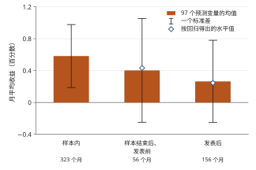

第 23 章 异象衰减与套利限制
McLean 与 Pontiff（2016）跟踪了来自 79 项学术研究的 97 个股票收益预测变量，每个都做成多空组合（long-short portfolio），其中大多数买入排序中极端的五分之一的股票，卖出另一端极端的五分之一。这些组合的平均收益，在原研究的样本里是每月 0.582%，样本结束之后、研究发表之前是 0.402%，发表之后是 0.264%，三个时期平均分别有 323、56 和 156 个月，这都是交易费用（trading costs）之前的数字，论文没有扣除交易费用（本书的判断）。按论文的回归，收益在样本结束后下降 26%，在发表后下降 58%（数学框 23.1）。1

图 23.1 还显示了预测变量测得的平均收益的离散：三个时期的标准差分别是 0.395、0.651 和 0.516，在后两个时期里它们都超过均值（本书的判断）。这种离散的一部分，是平均取自 56 个月和 156 个月的均值的抽样误差，最大的离散出现在最短的时期，所以只看平均值，看不出任何一个预测变量赚了多少（本书的判断）。
适用边界 这些数字涵盖所研究的 97 个已发表的截面预测变量，即给股票排序的规则，做成的多空组合大多取极端的五分之一，用 CRSP 数据构造，CRSP 涵盖美国上市股票，除一项研究外均为等权，数据截至 2013 年。26% 是统计偏差（statistical bias）的上界，因为一些交易者很可能在发表前就知道了某个预测变量；32% 是发表效应的下界。要把它们当作精确的数字，两者都需要假定发表前没有人知道一条规则；作者只假定发表之后知道它的投资者比之前多，发表日期只是交易者何时得知这条规则的代理。剩下的 42% 左右是套利（arbitrage）成本还是对风险的补偿，无法区分（本书的判断）。
由此引出两个问题（本书的判断）：已经发表的梯度为什么会缩小，又为什么不缩到零？本章不评判任何策略，其中没有一处是买入或卖出的建议（本书的判断）。
本章的模型去掉了若干默认，其中有表 5.1 为本章列出的四条：单一外生事实（single exogenous fact），即一个真值不受交易影响的事实（23.1 节）；对数效用（log utility），其默认是财富相等且固定的对数效用（23.3.1 节）；无摩擦交易（frictionless trading），即允许卖空（short selling）、没有资金约束（capital constraint）和交易费用（23.3 节和 23.4 节）；传播者即交易者（spreaders as traders），其默认是传播消息的人也据此交易，这一条只与无摩擦交易一起去掉（23.3.2 节），所以这一章在表中它那一行里带括号。在表 5.1 为本章列出的放宽（relaxation）之外，Grossman 与 Stiglitz 的例子在有供给噪声（supply noise）的内点均衡（interior equilibrium）处进入，它通过有成本的信息（costly information）和从价格学习去掉了无限注意（unlimited attention）与不从价格学习（no learning from prices），而它的供给噪声保留了外生交易对手（exogenous counterparty；23.2 节）；持有到信息公开（holding until disclosure）是一条候选默认（candidate default），5.8 节把它留在两张表之外（23.3.4 节）。
23.1 发表与自我否定的知识
发表没有给出任何一家公司的新观测（observation）；传开的是一条把公开数据变成预期收益的规则（本书的判断；12.7 节）。本书把这样的规则称为自我否定的知识（self-defeating knowledge）：一种已经发表的规律，它本身是价格的产物，知道它并据此交易的人越多，它就越弱（本书的判断）。这里的交易改变了规则所描述的那个规律本身，这就去掉了单一外生事实（本书的判断）。
McLean 与 Pontiff 把他们的两个回归系数，即样本结束后和发表后各月的系数，对照四种情形来读：如果样本内的可预测性来自统计偏差，两者都等于 −0.582，即样本内平均值的相反数；如果收益完全是错价（mispricing），发表后的套利把它完全纠正，发表后的系数为 −0.582，样本结束后的系数接近零；如果没有统计偏差、论文对投资者也没有影响，两者都等于零；而如果可预测性只反映理性预期（rational expectations），则去掉统计偏差之后，发表前后的可预测性相等。
他们拒绝了可预测性完全消失的假设，也拒绝了发表后可预测性没有变化的假设，检验样本结束后与发表后的变化是否相等，得到的 p 值是 0.024。样本内收益越高的预测变量，发表后的下降越大，作者的结论是，他们的发现表明投资者从学术论文中了解到错价。2
这一设计给出的只是开头那个框里的界，所以这一下降既不能读成纯粹的数据挖掘，也不能读成纯粹的套利（本书的判断）；12.7 节按年份给出了它的时间。发表后下降的可预测性，就是表 22.2 为自我否定的知识给出的可检验的差别（本书的判断）。这条规则作用在公开数据上，所以作用在信息梯度（information gradient）的第二部分，即还没想明白的信息（undigested information）：决定价格的人已经看到的消息，价格还没有把它正确消化（本书的判断；1.3 节）。在表 5.1 为本章列出的放宽之外，发表在交易已经开始之后到达，这也去掉了一次性注入（one-time injection；第 12 章）。
23.2 梯度的衰减与两种残余
Grossman 与 Stiglitz（1980；4.5 节和 16.4 节）无法在一般情形下证明他们的命题，就做了一个例子，其中有常绝对风险厌恶（constant absolute risk aversion）和服从正态分布的变量，交易者是价格接受者（price taker），价格里唯一的噪声是人均的风险资产供给，还有一个精度固定的信号，交易者有没有这个信号，取决于他有没有付它的成本；他们补充说，这样的均衡一般来说可能不存在。在一部分交易者知情、另一部分不知情的均衡里，信息成本下降时，价格的信息含量上升。
这时知情者在价格之外所知道的，等于风险厌恶（risk aversion）乘以成本，即 奈特（nat，用自然对数度量的信息单位），所以它随信息成本缩小（本书的推导；数学框 4.1）。本书把它叫作信息成本的残余（information-cost residual），即付费获取信息的人必须赚回的那部分梯度；它只在使知情交易者（informed trader）的均衡比例介于零和一之间的条件下成立。
发表之后，一条规则几乎不花什么成本就能学会，不过每个月应用它仍然需要不免费的数据，所以信息成本很可能只占 McLean 与 Pontiff 所测的剩余部分的一小块（本书的推论），这个剩余部分按回归系数约为样本内收益的 42%，按表 I 的均值约为 45%（本书的计算；数学框 23.1）。其余部分是套利成本还是对风险的补偿，即 12.7 节留下的那个问题，这一设计无法区分（本书的判断；开头的框）。
McLean 与 Pontiff 自己指出了第二种残余的来源。如果可预测性反映的是错价，发表使老练的投资者了解它并与它对着交易，他们预期收益会消失，或至少衰减；与消失相对的衰减，会在摩擦阻止套利把错价完全消除时出现，这类摩擦有系统性的噪声交易者风险（noise trader risk；De Long 等 1990）、特质风险和交易成本（idiosyncratic risk、transaction cost；Pontiff 1996 和 2006），投资者与投资专业人士之间的委托—代理问题可以放大这些效应（Shleifer 与 Vishny 1997）。他们说的是“如果”，这使摩擦成为衰减而不消失的一个充分理由，所以仅凭衰减，不能证明它是由摩擦造成的（本书的判断）。套利成本较低的预测变量，即集中在流动性好的股票和特质风险低的股票里的那些，发表之后的收益较低。3
表 23.1 把两种残余并排放在一起：它们缩小的原因不同（本书的判断）。套利成本的残余（arbitrage-cost residual）是使一个已知的错价没有被交易掉的那部分，只有当交易、卖空、融资和承担风险变便宜时才缩小，信息免费时它仍然存在（本书的判断）。与表 18.1（18.6 节至 18.8 节）一样，本章把对噪声交易者风险的补偿，以及对专业套利资本的特质风险和资金风险的补偿，算在梯度的风险溢价项（risk-premium term）里，所以套利成本的残余是这些风险和交易费用留下的错价（本书的判断）。在 De Long 等自己的模型里，人人都知道那个事实，所以那里的差距在转售价值里，在梯度之外（18.8 节）；这个模型进入这里，是为了限制套利的转售价格风险，这种风险在已知梯度仍然存在的地方也适用，发表之后就是如此（本书的判断）。
表 23.1 梯度的两种残余
| 残余 | 是什么使价格偏离事实 | 模型与前提 | 什么使它缩小 |
|---|---|---|---|
| 信息成本的残余 | 付费获取信息的人必须赚回信息的成本 | Grossman 与 Stiglitz 的例子：常绝对风险厌恶、正态变量、价格接受者、供给噪声、买或不买的精度固定的信号、内点均衡 | 信息变便宜（本书的推导） |
| 套利成本的残余 | 按已知的信息行动，成本太高或风险太大 | De Long 等，取其限制套利的风险，他们自己的差距在梯度之外（18.8 节），以及 Shleifer 与 Vishny（工作论文版）；Abreu 与 Brunnermeier；Jouini 与 Kallal；各有各的前提 | 交易、卖空、融资和风险承担变便宜；信息免费时它仍然存在（本书的判断） |
23.3 三种套利限制
套利限制（limits to arbitrage）是资金、交易对手、卖空和时间方面的约束，它们使一个看得见的错价没有被立刻交易掉。本书把它们分成三个分支，各有各的来源和前提（本书的判断）：短持有期（holding period）内的风险承担（De Long、Shleifer、Summers 与 Waldmann），追随业绩的资金（Shleifer 与 Vishny），以及同步风险（synchronization risk；Abreu 与 Brunnermeier）。
23.3.1 噪声交易者风险与短视野
18.8 节给出了 De Long、Shleifer、Summers 与 Waldmann（1990）的结果：噪声交易者（noise trader）的预期有误且随机，使一项没有基本面风险的资产变得有风险，老练的投资者只有在得到补偿时才持有它，补偿的是噪声交易者转为看空、资产价格下跌的风险（工作论文版）。噪声交易者风险就是这种风险，即噪声交易者在价格回归之前把它推得离基本面更远。有四个前提决定这个结果适用于哪里。
第一个前提是噪声交易者留在市场里。当他们的误判的分布收敛到零处的一个点质量时，均衡价格收敛到它的基本面价值一（工作论文版；数学框 23.2）。这个分支保留了外生交易对手，即出于信息以外的原因交易的人；没有他们，价格就停在基本面价值上，也就没有什么需要限制（本书的判断）。
第二个前提是有限的视野：寿命长于两期时，均衡更接近基本面均衡（工作论文版；18.8 节），而交叠世代使每个主体的视野很短，所以没有哪个主体能等到价格“回升”再卖出（工作论文版）。无限期存活的老练投资者从不面对结算（settlement）日，可以把价格推到它的基本面价值一，持有期越长，对于给定的价格风险所需的超额收益就越小（工作论文版）。他们补充说，长视野仍然可能帮助不大：在分红风险足够大、误判又持续的情况下，主体很可能觉得长期买入并持有没有吸引力，因为在他们可能不得不卖出之前，价格可能偏离基本面价值更远（工作论文版）。
第三个前提是没有最后一期，同时收益没有基本面风险。只要持有风险资产的收益总是不确定的，均衡就存在，交叠世代由于没有最后一期，保证了这一点；如果有最后一期，资产在那一期支付确定的分红并被清算，两类交易者都会去寻求他们所认为的无风险套利（工作论文版）。作者补充说，有基本面分红风险时，即使终止日期已知，他们的均衡的定性（qualitative）性质依然成立（工作论文版；18.8 节）。第四个前提是价格无界：用他们的话说，正态分布的资产价格无界“对于基本模型里均衡的存在必不可少”（工作论文版）。
这个模型用常绝对风险厌恶和两期寿命（工作论文版）代替了对数效用（本书的判断；数学框 23.2）。错价在这里能持续到多大程度，取决于老练投资者的风险承担能力（risk-bearing capacity），即他们愿意并且能够承担多少风险，对比的是噪声交易者在短持有期里造成的转售价格风险（本书的判断；16.3 节和 19.3.8 节）。这是否就是聪明的钱让 Hong、Lim 与 Stein 的动量（momentum）差异（工作论文版）继续存在的原因，仍然是本书的读法，尚未检验（untested；本书的判断；20.1.2 节）。4
23.3.2 追随业绩的资金
16.8 节和 19.3.3 节给出了 Shleifer 与 Vishny（1997）的按业绩付钱的套利（performance-based arbitrage），其中信息不足的外部投资者按套利者过去的业绩调动资金（工作论文版）。
在他们的模型里，套利者和他们的投资者是完全理性的，风险中性（risk neutrality）的套利者针对噪声交易者造成的错价建仓（工作论文版），所以这个分支的限制来自资金，不需要风险厌恶（本书的判断）。在极端的情形里，即使价格远低于基本面价值，套利者也设法卖出，而且恰恰在价格离基本面价值最远的时候，他们的仓位最小（工作论文版）。
这个结果依赖三个关于套利中代理问题的关键假设：在极端情形下，套利者已经满仓，处在杠杆约束上，拿不到新的权益资金；套利基金的投资者因为不了解模型的结构，按过去的业绩分配新的权益资金；市场是分割的，没有资金从既老练又尚未满仓的外部投资者那里流入（工作论文版）。在这些假设下，价格偏离基本面很远时，套利不能把它们拉回基本面价值（工作论文版）。
作者补充说，有相当数量的套利者，其资源与过去的业绩无关，就能抵消按业绩清算的影响（工作论文版），不过在像他们的模型里那样大的噪声交易者冲击之后，市场中大多数套利者很可能已经把资金全部投入，所以在极端情形下，按业绩付钱的套利很可能成立，能用来稳定市场的新资金很少（工作论文版）。
他们论证说，长期持续的异象（anomaly）必定足够不可预测，使专业套利者把它套利掉有风险，这种风险不必与任何宏观经济因子相关，可以纯粹是特质的基本面风险或噪声交易者风险，他们预期异象反映的是消除它们所需的套利交易有很高的特质收益波动（工作论文版）。McLean 与 Pontiff 发现特质风险低的地方发表后收益较低（23.2 节），这与此方向一致，但没有检验这一机制（本书的判断）。
套利者的杠杆约束，在没有资金约束这一部分去掉了无摩擦交易，而头脑与资源的分离随之去掉了传播者即交易者，因为知道消息的人用别人的钱交易（本书的判断）。5
23.3.3 同步风险
20.1.6 节和 21.2.4 节给出了 Abreu 与 Brunnermeier（2002）的分支：风险中性的套利者一个接一个地意识到一个错价，在他们之间它从来不是共同知识（common knowledge），同步风险，即不知道别人何时行动的不确定性，加上持有成本（holding cost），通常使他们推迟行动，除非错价超过了由套利者之间意见的分散度和其他参数设定的界（数学框 21.2）。由于风险中性的套利者可能发现提交无限大的订单是最优的，作者给每个套利者的多头和空头股数设了上限。每离开中性组合一期，套利者要付 的持有成本，其中 是价格， 是她的仓位，由于她可能在策略获利之前被迫结束它，这些成本被放大了。
他们的 把摩擦和风险溢价合在一起（20.1.6 节），所以单凭推迟，说不出是二者中哪一个拖住了套利者。每个分支把一种限制放在前面，即风险承担、资金或协调（coordination），各有各的前提，不过 Abreu 与 Brunnermeier 的持有成本和仓位上限可以代表另外两种（本书的判断）。6
23.3.4 持有期与收敛时间
三个分支有一个共同的成分（本书的判断）：套利者必须持有一个仓位，直到价格回到基本面价值，这需要一段时间，本书称之为收敛时间（convergence time），在此期间他要承担价格风险或各种成本。在 De Long 等的模型里，价格自己没有回到基本面价值的趋势（工作论文版），所以收敛时间没有上界（本书的判断）。在 Shleifer 与 Vishny 的模型里，价格偏低的那项资产在最后一个日期必定升到它的基本面价值 ，而亏损后的撤资可以迫使套利者在那之前卖出（工作论文版）。在 Abreu 与 Brunnermeier 的模型里，持有成本一直累积到错价被纠正为止，最迟在 ，即使套利者不卖出。
在根模型（root model）里，持有到最后的人只承担事实中的风险，不承担转售价格里的风险，这就蕴含了持有到信息公开的候选默认，即把仓位保持到信息公开为止（本书的判断；3.4 节和 5.4 节）。持有期短于收敛时间，就让转售价格的风险进来，这是 5.4 节所说的噪声交易者风险的形式（本书的判断），这样的交易者需要别人及时学到同样的东西（10.6 节）。摩擦也可以随持有期按比例增加：投资者通常不能完全使用股票的卖空交易（short sale）所得的款项，这实际上是一种与持有期成正比的卖空成本。
表 23.2 把三个分支并排放在一起。在表 5.1 为本章列出的放宽之外，De Long 等的噪声交易者去掉了贝叶斯更新（Bayesian updating），他们给人人都知道的收益所定的价格，去掉了与总体风险无关的事实（fact unrelated to aggregate risk），其默认是信息完全时价格等于概率；Shleifer 与 Vishny 的投资者，作者称之为完全理性，他们从价格的变动读出能力，这去掉了不从价格学习（本书的判断）。7
表 23.2 三种套利限制并排
| 分支 | 来源 | 什么限制了套利者 | 结果需要的前提 | 持有期怎样进入 |
|---|---|---|---|---|
| 噪声交易者风险 | De Long、Shleifer、Summers 与 Waldmann（工作论文版） | 风险厌恶，对比噪声交易者造成的转售价格风险 | 噪声交易者留下；没有无限期存活的老练投资者；没有无基本面风险的最后一期；价格无界 | 两期寿命；寿命更长时均衡更接近基本面价值，不过在分红风险足够大、误判又持续时，长期持有可能帮助很小（工作论文版） |
| 追随业绩的资金 | Shleifer 与 Vishny（工作论文版） | 亏损后资金被撤走，套利者是风险中性的 | 极端情形下满仓；追随过去业绩的资金；分割的市场；资源与业绩无关的套利者太少，不足以抵消它 | 撤资使仓位在最后一个日期的确定回升之前结束（工作论文版；本书的判断） |
| 同步风险 | Abreu 与 Brunnermeier | 别人可能尚未行动时的持有成本，套利者风险中性，仓位有上限 | 一个接一个地意识到；错价从不是共同知识；持有成本；错价在 21.2.4 节的界之内 | 每持有一期要付一次成本，直到纠正为止（本书的判断） |
23.4 交易费用与卖空成本
停留在交易费用之内的可预测性是用不上的（本书的判断）。按 Jouini 与 Kallal 的形式，一个没有风险的可预测变动，只要它停留在由摩擦设定的带之内，就可以不构成套利，而有风险的漂移（drift）不受这个带的约束（本书的判断；3.7 节）。18.7 节给出了摩擦的两种读法：要求收益（required return）之内的补偿，或者对一个收益的其他部分最多能捕获多少的一个界（本书的判断）。本节在允许卖空和没有交易费用这两部分去掉了无摩擦交易。
23.4.1 摩擦型限制有多大
Jouini 与 Kallal 报告的成本决定带的宽度，它们出自 1983 年至 1991 年的文献。在国债市场里，卖空成本是回购利率与逆回购利率之差，在 Stigum（1983）那里通常在 0.25% 至 0.65% 之间，对具体的某些债券则大得多（据 Jouini 与 Kallal 的转述）。对股票，Sharpe（1987）报告，市值超过 15 亿美元的公司平均买卖价差（bid–ask spread）为 0.52%，市值不到 1,000 万美元的公司最高达 6.55%，此外，对价格高于 100 美元的股票、100 股或以上的订单，典型的零售佣金约为 1%，而国债市场的价差和费用小得多（据 Jouini 与 Kallal 的转述）。Jouini 与 Kallal 写道，这类成本的大小“因证券而异，差别很大”；这些数字说的是它们那些市场和那些年份，本书没有现在的成本数据（本书的判断）。8
23.4.2 交易费用之内的盈余漂移
第 12 章给出了 Bernard 与 Thomas（1989）的盈余公告后漂移（post-earnings-announcement drift），即价格在公告（announcement）之后继续朝着盈余意外的方向移动，样本是 1974 年至 1986 年的纽约证交所和美国证交所公司，18.7 节给出了它的界，这个界随公司规模下降，Stoll 与 Whaley 的交易成本也是如此（据 Bernard 与 Thomas 的转述）。
作者写道，对小个人投资者来说，异常收益（abnormal return）看来在往返交易成本之内。他们把成本加倍，以反映多头与空头合在一起的头寸，平均每季度的换手（turnover）是组合的 78%，由此得出隐含的成本，小股票约为每季度 6%，大股票约为 3%，与他们表 1 中 60 天异常收益的大小差不多；加倍之后，Stoll 与 Whaley 的成本超过漂移的界（据 Bernard 与 Thomas 的转述）。这些成本是 1975 年之后协商佣金时代小投资者的成本。作者提出另一种描述：漂移可能在各种隐含超额收益的水平上出现，却永远不超过一个等于利用这条信息的成本的阈值，不论盈余意外有多大。
他们自己对这一解释提出了难题：如果成本把交易者挡在外面，公告之后为什么还有交易；不付佣金、又能绕开专营商价差的交易者，为什么没有消除漂移；成本为什么必然造成反应不足（underreaction），而不是只给价格添加噪声；以及漂移为什么有这么大一部分集中在下一季度的公告前后。
漂移看起来有一个上界，这是他们唯一与盈余预期的不完全更新相矛盾的结果。他们写道，能把两者调和的一种可能是，价格要到差距超过某个阈值，才反映当期盈余对未来盈余的全部含义，这个阈值给投机者足够的交易动机，但这样还没有回答，其间为什么有些投资者愿意按“错误的”价格交易。这些证据与摩擦作为界的读法相符：一个公开、免费的盈余数字所蕴含的东西，可以在成本之内留在价格之外，这是套利成本的残余，而作者的问题仍然悬而未决（本书的判断）。9
23.4.3 测得的衰减里的价差
价差也使测得的价格产生偏差（本书的判断）。在 Easley 与 O’Hara 的模型里，成交价格序列是真实价格过程的有偏记录，它的方差被高估了（3.7 节）。他们写道，如果只能跟踪价格数据，报价可能是更好的数据集，因为报价与成交价不同，是连续出现的，没有可选抽样（optional sampling）的问题。
Tetlock 跳过消息之后的第一天，部分原因是买卖报价反弹（bid–ask bounce），他指出，这种反弹和非同步交易会预测缺乏流动性的股票反转（reversal）更大，这与他发现的结果相反：流动性很高的股票反转大，缺乏流动性的股票反转极小（工作论文版）。McLean 与 Pontiff 用的是 CRSP 数据的月收益。要估计衰减，对价差需要同样的小心，用时钟时间（clock time）里的报价，第 24 章给出方法（本书的判断）。10
23.5 市场结构留下的梯度
另有两种梯度出于成本以外的原因留了下来，各自只在自己的模型之内成立（本书的判断）。
23.5.1 市场力量
4.6 节和 17.4 节给出了 Kyle（1989）的模型，即需求函数（demand schedule）的单次拍卖，变量服从正态分布，效用是指数形式，噪声交易（noise trading）为正。一位知情投机者（informed speculator）意识到自己面对的是一条向上倾斜的剩余供给曲线，就像垄断者那样限制自己的交易，所以在不完全竞争（imperfect competition）下“价格揭示的绝不会超过知情投机者私人精度的一半”，这是一个上界；噪声交易恰好为零而且交易者不是风险中性的，市场就会关闭（4.6 节）。
有市场力量（market power）的投机者留在价格之外的那部分梯度，是他自己的选择，它与表 23.1 的两种残余都不同：它适用于已经掌握的信息，出现在没有交易费用的模型里，并且需要正的噪声交易；它在 Kyle 的模型之内成立，本书不把它说成一般性的结果（本书的判断）。在表 5.1 为本章列出的放宽之外，投机者的价格冲击（price impact）去掉了价格接受者这条默认，即没有哪个交易者的订单会移动价格。11
23.5.2 决定性的信息
在 Milgrom（1981）的拍卖里，拍卖固定数量的物品，随着竞买人增多，价格依概率收敛到在完全信息下任何竞买人愿意付的最高价，当且仅当，按本书对他的条件的读法，某个信号可以是支持更高价值的任意强的证据（本书的判断；14.8 节和 16.6 节）；别的模型有别的条件，各有各的例外（表 14.2）。在 Grossman 与 Stiglitz 的例子里，信号是正态的，强度没有上界，所以那里有可能出现决定性的证据，而内点均衡处的信息成本使他们的价格达不到完全揭示（full revelation；本书的判断；16.6 节）。一个信号能不能是决定性的，是特定模型内完全的聚合（aggregation）的一个条件，本书不把它说成一般规律（本书的判断）。12
23.6 三个市场里的衰减与持续
两项研究测量衰减或持续，一个模型提示了一项检验，各在不同的市场。
23.6.1 单边走势之后的波动
21.2.5 节给出了 Lee 的有固定交易成本的序贯交易模型，其中部分瀑布（partial cascade）把信息作为沉默藏起来，雪崩把它释放出来，Lee 自己的保留是，现实里的价格变动可能比模型预测的小。他的命题 5 给出一次触发使 期的部分瀑布结束之后，在给定状态下价格的方差（数学框 23.3），Lee 写道，计算证实波动随雪崩之前瀑布的长度而增大。订正一个印错的因子之后，这个公式在两个状态上平均时印证了这一点（本书的推导），而在给定状态下，当价格已经偏向真实状态时，它可以下降（本书的计算；数学框 23.3）。
Lee 可检验的假设，在他的模型之内，是一段更长的单调变动之后，市场更可能有更大的波动，因为有隐藏信息的主体的数目随瀑布的长度增加。
一项检验，是本书设计的、没有做过的，会分三步（本书的判断）。它要用时钟时间里的报价中点（quote midpoint）定义单边走势（one-sided run），即价格一期接一期朝同一个方向移动，以及它的长度（23.4.3 节），再在走势结束之后测量已实现波动，以及交易笔数和交易规模，因为 Jones、Kaul 与 Lipson（1994）表明，波动与交易笔数相关，与每个订单的规模较少相关（据 Lee 的转述）；如果汇总的许多次走势，其结果出现的频率与价格所说的一样，这个波动估计的就是数学框 23.3 里按状态平均的量（本书的判断）。第三步，它要把 Lee 的足迹，即许多原先没有进场的交易者各下一个订单，与协调和同步（第 21 章）对照，后者在长走势之后也可以给出剧烈的变动。这项检验只问变动有多大，不涉及变动的方向。
这个模型通过它的固定成本去掉了无摩擦交易，而在表 5.1 为本章列出的放宽之外，又去掉了无观察学习（no observational learning）和不从价格学习（21.2.5 节）。13
23.6.2 消退的反转
10.7 节和第 13 章的开头给出了 Tetlock（2011）的发现：在 1984 年至 2004 年标准普尔 500 公司的公开消息（public news）中，市场对旧闻（stale news），即重复已经出现过的内容的报道，所作的反应在下一周部分地反转（工作论文版）。
他从这样一个观察出发：行为异象常常随时间减弱，因为追求高风险调整后收益的套利者发现了它们，他把回归在两个几乎等长的子时期重做，即 1984 年至 1994 年和 1995 年至 2004 年，持有反转组合的时间为第 2 天至第 5 天（工作论文版）。在他的表 XI 的 10 个可能的比较里，有 9 个显示后半期公开消息之后的反转低得多，旧闻和其他消息都是如此，而对他的全部五个旧闻代理指标，在两个子时期里，旧闻之后的反转都仍然比其他消息之后大得多（工作论文版）。在不是旧闻的消息之后，反转在第二个子时期的五个面板中有四个消失了（工作论文版）。
他的读法是试探性的（本书的判断）：他写道，这些结果“表明套利还没有消除旧闻的反转”，而对其他消息，“理性套利者的交易有可能已经消除了这些其他消息事件之后的反转”（工作论文版）。论文没有检验是哪一种套利或哪一种摩擦削弱了反转，或让它留了下来，所以本书把后半期的衰减记作来源没有解释的一个规律（本书的判断）。14
23.6.3 预测市场偏差的逐年变化
18.3 节给出了 Bürgi、Deng 与 Whelan（2026）的回归，被解释变量是结果减去价格，解释变量是价格，对象是距收盘 10 天以内的 Kalshi 合约，时间从 2021 年到 2025 年 4 月，全样本的斜率 为 0.034（工作论文版），这是热门与冷门的偏差（favorite–longshot bias）：热门赢的次数比它们的价格所暗示的多，冷门赢的次数比它们的价格所暗示的少。
作者在他们的表 9 里逐年回归，每一年都拒绝价格是结果的无偏预测的零假设，他们看到偏差有所减弱的一些证据，因为 2025 年的斜率较小，统计显著性也较低（工作论文版）。2021 年至 2025 年的斜率是 0.041、0.023、0.036、0.048 和 0.021（工作论文版），它们没有逐年下降（本书的判断），2024 年的最大（工作论文版）。2025 年的数据到 4 月结束（工作论文版），早于论文 2025 年 9 月的第一版，所以 2025 年较小的斜率不可能是论文自己发表的效应（本书的判断）。
作者问，为什么没有投资者进来压低挂单方（maker）的利润，挂单方即挂出订单让别人成交的交易者，对象是价格在 50 美分及以上的合约，这些合约在他们的样本里扣除佣金后的收益是 1.9%，他们给出三个可能的原因：成交量小；风险大，这些合约的收益有 33% 的标准差，这可能使理性的投资者认为正的预期收益只是对风险的适当回报；以及参与者可能没有意识到这种偏差（工作论文版）。他们想看到，这些规律现在公开记录下来之后是否还持续，或者像其他金融市场异象一旦公开往往发生的那样消失（工作论文版）。
成交量小限制容量，风险大，按作者的读法，赚的是对风险的补偿，表 18.1 把它算在风险溢价里；这两者留下的偏差就是套利成本的残余（本书的判断）。意识是发表可以传开的东西，所以发表之后如果出现衰减，那会是 23.1 节那一类自我否定的知识，而 2025 年的数字不能检验这一点（本书的判断）。15
23.7 本章引用的实证证据
- 测量（measurement）。 McLean 与 Pontiff 以及 Bernard 与 Thomas，取自期刊版；Tetlock，以及 Bürgi、Deng 与 Whelan，取自工作论文（工作论文版）。
- 只通过别人的转述知道的。 Stigum、Amihud 与 Mendelson 以及 Sharpe 的成本数字（据 Jouini 与 Kallal 的转述）；Stoll 与 Whaley 的成本（据 Bernard 与 Thomas 的转述）；Jones、Kaul 与 Lipson（据 Lee 的转述）；Pontiff 的两篇论文（据 McLean 与 Pontiff 的转述）。
- 模型、论证和计算。 Grossman 与 Stiglitz、Kyle、Lee、Abreu 与 Brunnermeier、Jouini 与 Kallal、Easley 与 O’Hara 以及 Milgrom，取自期刊版；De Long 等、Shleifer 与 Vishny 以及 Hong、Lim 与 Stein，取自工作论文（工作论文版）；数学框 23.1 的份额、图 23.1 的菱形和须线端点，以及数学框 23.3 的例子，是本书的计算；23.2 节的 奈特、数学框 23.2 的极限，以及数学框 23.3 的订正和状态平均，是本书的推导。
23.8 交易者的自查清单
这些问题没有一个说该买什么或卖什么，答案再好，也不能使一笔交易变得安全（本书的判断）。
- 这个规律发表了吗，它是平均值吗？ 检查：McLean 与 Pontiff 的 97 个已发表的预测变量，在美国上市股票里，数据截至 2013 年，在交易费用之前，样本结束之后赚得更少，发表之后又更少，而且在后两个时期里，它们测得的平均收益的离散，包括抽样误差在内，超过了均值，所以平均值说不出任何一个预测变量赚了多少（本书的判断；开头和 23.1 节）。
- 剩下的是哪一种残余？ 检查：发表之后，一条规则几乎不花成本就能学会，不过应用它需要不免费的数据，所以信息成本很可能只占剩余部分的一小块（本书的推论）；McLean 与 Pontiff 的设计分辨不出套利成本和对风险的补偿（本书的判断；23.2 节）。
- 仓位能持有到价格收敛吗？ 检查：把持有期与收敛时间对照（本书的判断）。De Long 等的噪声交易者风险需要噪声交易者留下、有限的视野、没有无基本面风险的最后一期、价格无界，并且随视野变长而减弱，不过在分红风险足够大、误判又持续时可能减弱得很少；Shleifer 与 Vishny 的结果需要套利者在极端情形下满仓、资金追随过去的业绩、市场分割，而相当数量的资源与过去业绩无关的套利者可以抵消它（工作论文版）；Abreu 与 Brunnermeier 的风险中性套利者，一个接一个地意识到，所以错价从不是共同知识，仓位有上限，每持有一期要付成本，通常推迟行动，除非错价超过由他们之间意见的分散度和其他参数设定的界（23.3 节）。
- 可预测性在成本之内吗？ 检查：有摩擦时，一个没有风险的可预测变动，只要停留在价差或卖空成本设定的带之内，就可以不构成套利（5.4 节）；Bernard 与 Thomas 的漂移，样本是 1974 年至 1986 年的纽约证交所和美国证交所股票，看来在 1975 年之后协商佣金时代小投资者的往返成本之内，作者也对交易成本的解释提出了难题（23.4 节）。
- 衰减是用报价还是用成交价测的？ 检查：用成交价估计的衰减可能带有价差的偏差；在 Easley 与 O’Hara 的模型里，没有可选抽样问题的报价可能是更好的数据，第 24 章给出方法（本书的判断；23.4.3 节）。
23.9 小结
- McLean 与 Pontiff 的 97 个已发表的预测变量，即美国上市股票的多空组合，数据截至 2013 年，在交易费用之前，样本内平均每月赚 0.582%，样本结束后 0.402%，发表后 0.264%；在后两个时期里，它们测得的平均收益的离散，包括抽样误差在内，超过了均值，所以这些平均值说不出任何一个预测变量赚了多少（本书的判断；开头）。
- 一些交易者很可能在发表前就知道某个预测变量，所以按论文的回归，样本结束后 26% 的下降是统计偏差的上界，32% 是发表效应的下界；按同一量法剩下的 42% 左右，或按表 I 的均值剩下的 45%（本书的计算），不大可能有很多是对信息成本的补偿，因为已发表的规则几乎不花成本就能学会，不过应用它需要不免费的数据（本书的推论），而这一设计分辨不出其中的套利成本和风险溢价（本书的判断；23.1 节和 23.2 节）。
- 在 Grossman 与 Stiglitz 的例子里，有常绝对风险厌恶、正态变量、价格接受者、供给噪声，以及买或不买的精度固定的信号，在一部分交易者知情、另一部分不知情的均衡里，信息变便宜使价格的信息含量更高，知情者在价格之外知道 奈特，它随成本缩小（本书的推导）；这种信息成本的残余不同于套利成本的残余，后者在信息免费时仍然存在，只有当交易、卖空、融资和承担风险变便宜时才缩小（本书的判断；23.2 节）。
- 每种套利限制有自己的前提：De Long 等的噪声交易者风险需要噪声交易者留下、有限的视野、没有无基本面风险的最后一期、价格无界，并且随视野变长而减弱，不过在分红风险足够大、误判又持续时可能减弱得很少，Shleifer 与 Vishny 的风险中性套利者在极端情形下满仓、由过去的业绩提供资金、处在分割的市场里时失败，足够多的资源与过去业绩无关的套利者可以抵消这种失败（工作论文版）；Abreu 与 Brunnermeier 的风险中性套利者一个接一个地意识到，仓位有上限，每持有一期有成本，通常推迟行动，除非错价超过由他们之间意见的分散度设定的界，而且三者共同的成分是持有期对比收敛时间，这与持有到信息公开连在一起（本书的判断；23.3 节）。
- 有摩擦时，一个没有风险的可预测变动，只要停留在带之内，就可以不构成套利，这个带的宽度因证券而异，差别很大，这是 Jouini 与 Kallal 的原话，他们报告的那个时代的数字也是如此（据 Jouini 与 Kallal 的转述）；Bernard 与 Thomas 的漂移，样本是 1974 年至 1986 年的纽约证交所和美国证交所股票，看来在 1975 年之后那个时期小投资者的往返成本之内，作者也对交易成本的解释提出了难题（23.4 节）。
- 在 Kyle 的单次拍卖里，变量服从正态分布，效用是指数形式，噪声交易为正，有市场力量的投机者故意把一部分梯度留在价格之外，价格至多揭示知情投机者私人精度的一半（本书的判断；23.5.1 节）。
- 在 Tetlock 的标准普尔 500 公司的消息里，从 1984 年至 1994 年到 1995 年至 2004 年，反转在 10 个比较中的 9 个里下降，旧闻也包括在内，同时旧闻之后的反转仍然大于其他消息之后的反转；Bürgi、Deng 与 Whelan 对距收盘 10 天以内的 Kalshi 合约的斜率，在 2025 年较小（工作论文版）；Tetlock 没有检验衰减的任何解释，五个逐年斜率没有稳定下降，2025 年的数据到 4 月结束，早于论文出现（本书的判断；23.6.2 节和 23.6.3 节）。
23.10 写给量化读者的数学框
数学框 23.1 McLean 与 Pontiff 下降幅度的两种量法
McLean 与 Pontiff 估计 ，其中 是预测变量 在 月的收益， 是每个预测变量各自的常数， 在样本结束之后、发表之前的各月等于一， 在发表之后的各月等于一。他们的表 II 第 (1) 列给出 −0.150 和 −0.337，相对于样本内均值 58.2 个基点，下降幅度分别是 26% 和 58%。本框其余部分是本书的计算。按表 I 的均值，下降幅度是 ，即 31%，以及 ，即 55%，所以发表之后样本内收益剩下 45%，按系数则是 42%。从发表之前的水平量起，按均值，发表使收益再降 ，即 34%；按系数再降 ，即 43%。图 23.1 的菱形位于 和 。这两种量法不同，是因为每个预测变量各有一个常数的回归，和跨预测变量的简单平均，对月份和预测变量的加权方式不同（本书的判断）。16
数学框 23.2 De Long 等的定价式
噪声交易者的测度是 ，老练投资者的测度是 ；平均误判 度量噪声交易者平均有多看多， 是他们对每单位风险资产预期收益的误判的方差（工作论文版）。效用是 ，作者把 称为绝对风险厌恶系数（工作论文版）。设 是安全资产的收益， 是本期的误判，则没有基本面风险的资产的价格为
（工作论文版），它的最后一项补偿老练投资者承担噪声交易者转为看空的风险（18.8 节）。当 的分布收敛到零处的一个点质量时，价格收敛到它的基本面价值一（工作论文版）：、 和 都趋于零，除第一项之外的每一项也随之趋于零（本书的推导），这是噪声交易者必须留下这一前提的公式形式（本书的判断）。17
数学框 23.3 订正后的 Lee 命题 5
Lee 的命题 5 给出一次触发之后，在状态 下 的方差，其中 是在大小为 、含 个 H 信号的样本下，状态 B 相对状态 G 的似然。在印出来的公式里，第二个概率因子，即 次幂的那一个，重复了第一个，即 H 的概率。本框其余部分是本书的推导，例子除外，例子是本书的计算。在给定状态下，瀑布中的每个信号以概率 是 H，以概率 是 L，所以公式应当写成
在给定状态下， 的均值一般不是 ，所以这个和是离 的均方变动，论文把它叫作方差。用权重 和 在两个状态上平均，这个和就是市场自己的概率下 的方差，在这个概率下 的均值是 ；更长的瀑布揭示更多，所以对每个 ，这个方差都随 增大。给定状态时则不必如此：当 已经偏向真实状态时，这个和可以先升后降，向 与该状态的取值之间距离的平方回落。取 ，，，状态为 G，它在 时升到约 0.016，然后向 回落。18
本章文献
本章引用的文献。所读版本不是期刊版的，条目里写明读的是哪个版本；尾注里的页码按所读的版本。
- Abreu, D., and M. K. Brunnermeier (2002). Synchronization Risk and Delayed Arbitrage. Journal of Financial Economics 66(2–3): 341–360.
- Amihud, Y., and H. Mendelson (1991). Liquidity, Maturity, and the Yields on U.S. Treasury Securities. Journal of Finance 46: 1411–1425. 没有读；按 Jouini 与 Kallal（1995a）的转述引用。
- Bernard, V. L., and J. K. Thomas (1989). Post-Earnings-Announcement Drift: Delayed Price Response or Risk Premium? Journal of Accounting Research 27, Supplement: 1–36.
- Bürgi, C., W. Deng and K. Whelan (2026). Makers and Takers: The Economics of the Kalshi Prediction Market. CESifo Working Paper 12122，2026 年 1 月版。
- De Long, J. B., A. Shleifer, L. H. Summers and R. J. Waldmann (1990). Noise Trader Risk in Financial Markets. Journal of Political Economy 98(4): 703–738. 所读为 NBER 工作论文 2395，1987 年 10 月，题为“The Economic Consequences of Noise Traders”；没有核对期刊版。
- Easley, D., and M. O’Hara (1992). Time and the Process of Security Price Adjustment. Journal of Finance 47(2): 577–605.
- Grossman, S. J., and J. E. Stiglitz (1980). On the Impossibility of Informationally Efficient Markets. American Economic Review 70(3): 393–408.
- Hong, H., T. Lim and J. C. Stein (2000). Bad News Travels Slowly: Size, Analyst Coverage, and the Profitability of Momentum Strategies. Journal of Finance 55(1). 所读为 NBER 工作论文 6553，1998 年 5 月；没有核对期刊版。
- Jones, C., G. Kaul and M. Lipson (1994). Transactions, Volume, and Volatility. Review of Financial Studies 7: 631–651. 没有读；按 Lee（1998）的转述引用。
- Jouini, E., and H. Kallal (1995a). Arbitrage in Securities Markets with Short-Sales Constraints. Mathematical Finance 5(3): 197–232.
- Jouini, E., and H. Kallal (1995b). Martingales and Arbitrage in Securities Markets with Transaction Costs. Journal of Economic Theory 66: 178–197.
- Kyle, A. S. (1989). Informed Speculation with Imperfect Competition. Review of Economic Studies 56(3): 317–356.
- Lee, I. H. (1998). Market Crashes and Informational Avalanches. Review of Economic Studies 65(4): 741–759.
- McLean, R. D., and J. Pontiff (2016). Does Academic Research Destroy Stock Return Predictability? Journal of Finance 71(1): 5–32.
- Milgrom, P. R. (1981). Rational Expectations, Information Acquisition, and Competitive Bidding. Econometrica 49(4): 921–943.
- Pontiff, J. (1996). Costly Arbitrage: Evidence from Closed-End Funds. Quarterly Journal of Economics 111: 1135–1151. 没有读；按 McLean 与 Pontiff（2016）的转述引用。
- Pontiff, J. (2006). Costly Arbitrage and the Myth of Idiosyncratic Risk. Journal of Accounting and Economics 42: 35–52. 没有读；按 McLean 与 Pontiff（2016）的转述引用。
- Sharpe, W. (1987). Investments. Prentice-Hall. 没有读；按 Jouini 与 Kallal（1995b）的转述引用。
- Shleifer, A., and R. W. Vishny (1997). The Limits of Arbitrage. Journal of Finance 52(1): 35–55. 所读为 NBER 工作论文 5167，1995 年 7 月；没有核对期刊版。
- Stigum, M. (1983). The Money Market. Dow Jones-Irwin. 没有读；按 Jouini 与 Kallal（1995a）的转述引用。
- Stoll, H. R., and R. E. Whaley (1983). Transactions Costs and the Small Firm Effect. Journal of Financial Economics 12(1): 57–80. 没有读；按 Bernard 与 Thomas（1989）的转述引用。
- Tetlock, P. C. (2011). All the News That’s Fit to Reprint: Do Investors React to Stale Information? Review of Financial Studies 24(5): 1481–1512. 所读为 2008 年 2 月的工作论文。
注释
1. McLean 与 Pontiff（2016），期刊版：预测变量和组合在第 7 页；表 I 的均值、标准差和月数，以及样本的结束时间，在第 11 页；CRSP 在 §I，第 9 页，是在美国交易所上市的股票的数据库，不过论文自己没有说“美国”；等权在 §II，第 10 页；下降幅度在摘要，第 5 页，界在第 7 页；关于谁知道一条规则的假定，以及把日期作为代理，在第 10 页。其中 16 个预测变量是指示变量，被指示的公司构成一边，所有其他股票的等权组合构成另一边（§I，第 9–10 页）。代码在 book/code/btc_pilot/：anomaly_decay.py 存放图中的数字，由 book/code/tests/ 里的 test_anomaly_decay.py 检验，bookfig_ch23.py 据此画出图 23.1；纵轴从每月 −0.4% 到 1.2%，是本书的选择，为的是显示每一根须线。
2. McLean 与 Pontiff（2016）：四种情形中的三种在第 12 页，第四种，理性预期，在引言 §B，第 7 页；拒绝在第 7 页；检验变化是否相等在表 II，第 13 页；样本内收益越高下降越大，以及结论，在摘要，第 5 页。时间的来源见 12.7 节和第 12 章的注 8。
3. Grossman 与 Stiglitz（1980），期刊版：例子在第 395 页，均衡的存在在脚注 5；知情者与不知情者在第 393 页；供给噪声在第 396 页；价格接受在对定理 5 的评论里，第 401 页；定理 4 在第 400 页；方程（19）的条件在第 399 页。数学框 4.1 推导了以奈特为单位的恒等式。McLean 与 Pontiff（2016）：预期的衰减和摩擦在引言 §B，第 7 页，论文把 De Long 的名字拼作“Delong”；套利成本较低时发表后收益较低在第 8 页。
4. De Long 等（1990），NBER 工作论文 2395：收敛到 1 在 §I，第 9 页；短视野在脚注 1，第 10 页；更长的寿命、无限期存活、长寿和持有期的段落在 §IV，第 29 页，其中关于更长寿命的那句把“than”印成了“then”；持续的误判在 §IV，第 30 页；均衡与最后一期在 §I，第 10 页；价格无界在附录 II，第 36 页。无基本面风险的资产、补偿和已知的终止日期的来源见 18.8 节和第 18 章的注 10。Hong、Lim 与 Stein 的假设见 20.1.2 节和第 20 章的注 3。
5. Shleifer 与 Vishny（1997），NBER 工作论文 5167：理性的投资者和风险中性的套利者在 §2，第 5 页；最小的仓位在第 11 页；三个假设在 §2 的小结，第 15–16 页；资源独立的套利者、很大的冲击和极端情形在第 15 页，在对按业绩付钱的套利的讨论里，其中“PBA”是它的缩写；异象在 §3，第 22 页，特质波动在 §4，第 23 页。其余的来源见 16.8 节和 19.3.3 节。
6. Abreu 与 Brunnermeier（2002），期刊版：典型的推迟及其界在 §1，第 344 页；风险中性和无限大的订单在第 347–348 页；仓位上限和持有成本在 §3，第 348 页；被迫提前结束在第 349 页。其余的来源见 20.1.6 节和 21.2.4 节，以及数学框 21.2。
7. Shleifer 与 Vishny（1997），工作论文：最后一个日期的确定回升在 §2，第 5 页。Abreu 与 Brunnermeier（2002）：在 的纠正在 §3，第 348 页。Jouini 与 Kallal（1995a），期刊版：卖空交易所得的款项在 §1，第 198 页。持有到信息公开和较短持有期的来源见 3.4 节、5.4 节和 10.6 节。
8. Jouini 与 Kallal（1995a）：回购利差、Stigum 的数字，以及 Amihud 与 Mendelson 的结果，在 §1，第 198 页。Jouini 与 Kallal（1995b），期刊版：Sharpe 的价差、佣金和国债市场在 §1，第 180 页。Stigum 的书是 1983 年的，Sharpe 的是 1987 年的，Amihud 与 Mendelson 的论文是 1991 年的。Amihud 与 Mendelson（1991）表明，这样大小的成本，即使在扣除交易费用之后，也抵消了在短期国债与现金流相同、期限不到六个月、相对便宜的中期国债之间套利的利润（据 Jouini 与 Kallal 的转述）。
9. Bernard 与 Thomas（1989），期刊版：小投资者的往返成本在 §4.3，第 24 页；加倍的成本、换手，以及与表 1 的比较在第 25 页，其中这句话在“60-day”之前的“the”处印成了另一个词；协商佣金在脚注 25，第 25 页；加倍的 Stoll 与 Whaley 成本在第 26 页；阈值在 §4.3.1，第 25 页；难题在 §5.2.1，第 33 页；上界和可能的调和在 §5.2.2，第 34 页。样本和界的来源见第 12 章和 18.7 节。
10. Easley 与 O’Hara（1992），期刊版：报价作为更好的数据在 §IV，第 599 页。Tetlock（2011），2008 年 2 月的工作论文：跳过的一天在 §I.B，第 8–9 页；流动性好和缺乏流动性的股票在 §II.B，第 18 页，以及 §V，第 34 页。
11. Kyle（1989），期刊版：垄断者的限制和二分之一的界在 §7，第 334 页。模型和关闭的市场的来源见 4.6 节和 17.4 节，以及第 4 章的注 10 和第 17 章的注 5。
12. Milgrom 的拍卖和其他条件的来源见 14.8 节和 16.6 节，以及表 14.2 和第 14 章的注 9。
13. Lee（1998），期刊版：命题 5、它的引导语和 的定义在 §5.1，第 753 页；可检验的假设、有隐藏信息的主体数目和 Jones、Kaul 与 Lipson 在 §5.2，第 753 页。模型和 Lee 的保留的来源见 21.2.5 节。
14. Tetlock（2011），2008 年 2 月的工作论文：子时期和表 XI 在 §III.A，第 23–24 页；对其中三个代理指标，在 1995 年至 2004 年，反转的四日累计 alpha，即经风险调整的收益，分别是 34、26 和 41 个基点，即百分之一的百分之一，t 统计量分别是 2.59、2.46 和 4.06（工作论文版）。样本和反转的来源见 10.7 节和第 10 章的注 9。
15. Bürgi、Deng 与 Whelan（2026），CESifo 工作论文 12122，2026 年 1 月版，其封面给出 2025 年 9 月为原始版本：逐年回归在 §3.4，第 22 页，以及表 9，第 26 页，其标准误是 0.015、0.011、0.009、0.006 和 0.011（工作论文版）；数据在 §3.1，第 10 页；问题、三个原因和作者想要的检验在 §6.2，第 43–44 页。全样本回归的来源见 18.3 节及其注。
16. McLean 与 Pontiff（2016）：方程（1）在第 12 页；表 II 第 (1) 列，以及相对于 58.2 个基点的下降幅度，在第 13 页；表 I 的均值在第 11 页。计算在 book/code/btc_pilot/anomaly_decay.py。
17. De Long 等（1990），NBER 工作论文 2395：噪声交易者和老练投资者的测度在 §I，第 5 页；误判的均值和方差、方程（2）以及 在第 6 页；方程（12）及其极限在第 9 页。由效用的形式，绝对风险厌恶是 （本书的推导）；本框照印出来的写法保留两者。
18. Lee（1998）：命题 5、它的公式和 在 §5.1，第 753 页。例子的代码是 book/code/btc_pilot/ 里的 lee_volatility.py，由 book/code/tests/ 里的 test_lee_volatility.py 检验；例子里 ，所以不论 是由 算出，还是由给定 H 或 L 的概率算出，结果相同。